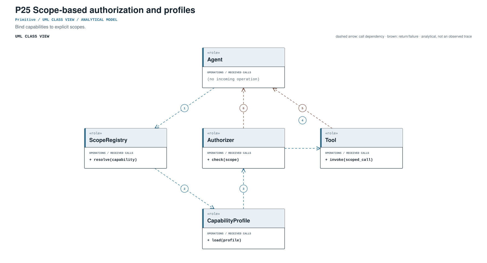
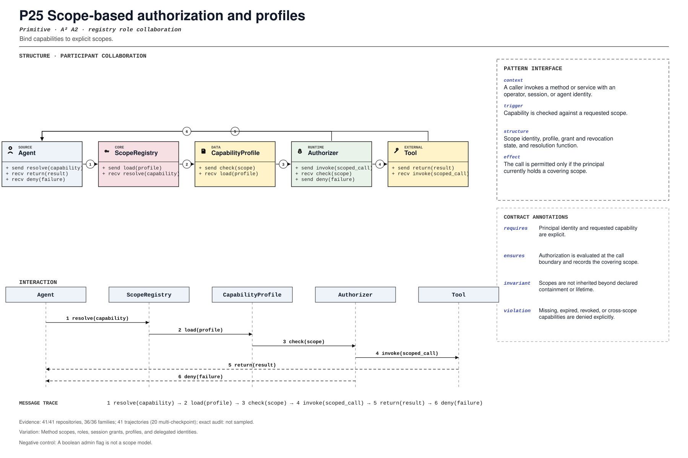

PROMPT SKETCH
Resolve capabilities at the call boundary using the principal, requested scope, and active profile. Record the covering scope that authorized the call, or deny with the missing scope.Bind capabilities to explicit scopes.
capability_resolutionRECORD STATUSCandidate · v0.1.0The proposed contract drawn as participant roles, received calls, and numbered dependencies.

The same roles and calls as a class collaboration and a numbered message sequence.

Where the mechanism applies. All four dimensions belong to the proposed match, not just its vocabulary.
The obligation that clients, operators, and auditors should be able to rely on.
A boolean admin flag is not a scope model.
The hot spot is admitted only where the protected semantics survive.
Method scopes, roles, session grants, profiles, and delegated identities.
Test widening, revocation, expiration, child agent, and cross-tenant access.
Did coarse permissions become composable capability scopes?
An illustrative prompt and a small design sketch for the proposed contract. Names and APIs are invented; this is not a repository excerpt.
Resolve capabilities at the call boundary using the principal, requested scope, and active profile. Record the covering scope that authorized the call, or deny with the missing scope.def authorize_call(principal, capability, registry):
scopes = registry.scopes_for(principal)
covering = [scope for scope in scopes if scope.covers(capability)]
if not covering:
return Denied(capability, missing=capability.required_scope)
decision = max(covering, key=lambda scope: scope.specificity)
return Allowed(capability, scope=decision.id)Illustrative design sketch. A session grant is not a blanket capability; the covering scope belongs in the record. This example is a teaching aid, not implementation evidence or a conformance claim.
The frozen rule that retrieves this record, the canonical source exemplar, and the control that should stay unmatched.
capability_resolution(?i)\b(?:scope[sd]?|capabilit(?:y|ies)|authorization[_-]?profile|permission[_-]?scope)\bFrozen expression, v0.1.0. A match is a retrieval cue, not a confirmed implementation.src/gateway/method-scopes.ts:215Support: src/shared/operator-scope-compat.test.ts:64Up to five public files retrieved by the frozen cue and pinned to the audited commit. A match is a place to inspect, not a confirmed implementation.
src/gateway/method-scopes.ts:215CANONICAL SOURCE02aaif-goose/goosecrates/goose/src/acp/common.rs:69RETRIEVAL CUE03affaan-m/ECCskills/agent-self-evaluation/scripts/evaluate.py:112RETRIEVAL CUE04agno-agi/agnolibs/agno/agno/db/singlestore/utils.py:157RETRIEVAL CUE05Aider-AI/aideraider/args.py:420RETRIEVAL CUEEach layer answers a different question. Do not substitute retrieval for review.
A concrete source anchor is available for this proposed record. It is one exemplar, not evidence that all repositories—or every contract field—conform.
Review boundary: this candidate and its specification come from an AI-assisted study. Independent human validation remains open.
100.0% of repository families in the frozen panel have at least one current cue, historical cue, or canonical source layer. This is not confirmed prevalence.
Current lexical-cue repositories: 41 / 4160a2e23d5422src/gateway/method-scopes.ts:215src/shared/operator-scope-compat.test.ts:64Least-privilege operator scopes per method.
(?i)\b(?:scope[sd]?|capabilit(?:y|ies)|authorization[_-]?profile|permission[_-]?scope)\bThis expression is a discovery instrument only. A match is a retrieval cue—not a confirmed implementation, pointcut match, or contract proof.